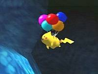
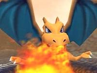
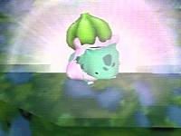
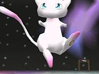
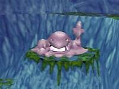
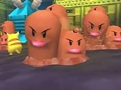
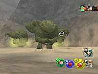
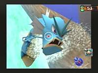

Las patentes de software sólo benefician a las grandes empresas. |
 |
|
|
|
Nintendo 64 Game Boy N. GAMECUBE Game Boy Advance |
|
|
|
Playstation Playstation 2 |
|
|
| Dreamcast |
|
Juegos de Moda |
|
Pokém. Snap(N64) RE Code Vero. (DC) S.Smash Bros (N64) Power Stone 2 (DC) Zelda:M.'s M. (N64) Phantasy S.O. (DC) F. Fantasy IX (PS) Sonic Adv. 2 (DC) Pokémon St. (N64) |
|
Otras Secciones |
|
Colaboraciones Actualizaciones Ant. Noticias Ant. Encuestas Ant. |
|
E-Mail
|
 |
 Pokémon Snap
-Guarda en Cartucho- -Textos en castellano- - 64 Pokémon - Valoración 8 |
- Más Secretos y Fotos Curiosas (1/2) -
|  Esto pasa cuando en la cueva se golpea al Zubat que tiene cogido a Pikachu (en la cueva), si le aciertas con una manzana o pester-ball, el Zubat lo soltará y Pikachu caerá así. |
 Charizard se consigue evolucionando al único Charmeleon del juego, al final del Volcan, tirándolo con un golpe al cráter de lava. |
 En la cueva hay falsos Bulbasaur (fijaos en los ojos, son puntos) que en realidad son Dittos, para descubrirlos tirarles una pester-ball y se transformarán en el original. |
|  Mew está en una ruta secreta que consigues al hacerte con todos los Pokémon. La ruta se llama Arcoiris y sólo esta él. Para fotografiarle de cerca, tírale pester-ball hasta romperle la protección y cuando este descubierto saldrá por un lado (izquierda o derecha), anticípate tirándole una pester-ball antes de que se vaya más lejos y se parará y te mirará, ¡Ahora!. |
 Para conseguir a Muk, fotografía al principio de la cueva los 2 Grimer que salen, al hacerlo saldrá más adelante un tercero más cerca de ti, entonces tírale pester-balls hasta que evolucione a Muk. |
 Gracias a este vehículo podrás desplazarte por las rutas del prof. Oak. Adopta 3 posiciones, para ir por tierra, mar y aire. En esta imágen vemos la de aire. |
|  Para que salgan Dugtrios, tienes que ir fotografiando a los Diglett que vayan saliendo y que Pikachu te indicará (al final de la ruta del túnel). |
 Los Graveler que esta enganchado en las rocas bajarán a bailar si les tocas la pokéflauta. |
 Gyarados es el más difícil de conseguir: En el Valle, al principio de la ruta, verás un Magikarp (en la curva primera curva a la izquierda del rio) que al saltar sale un destello. A ese Magikarp tienes que hacertarle con una pester-ball para que salte del rio y caiga fuera. Luego lo recogerá un Mankey y lo lanzará cayendo justo delante de la cascada de más adelante. Hay que darle otra vez con otra pester-ball, al hacerlo saltará a la cascada y evolucionará en Gyarados. |
| Más Secretos y Fotos Curiosas (2/2) |

come.to/videojuegos
videojuegos.come.to